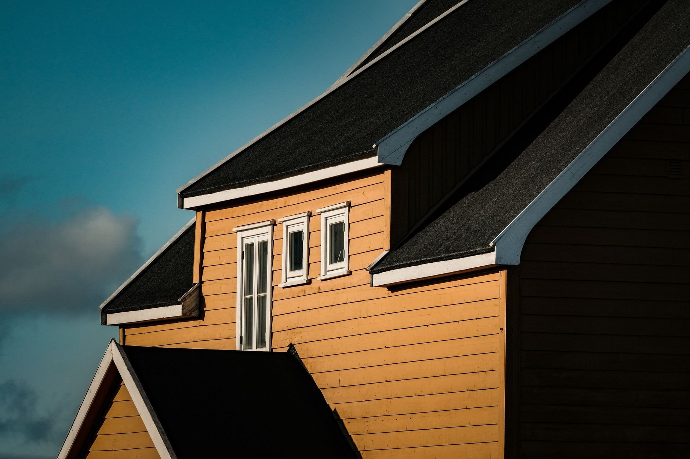
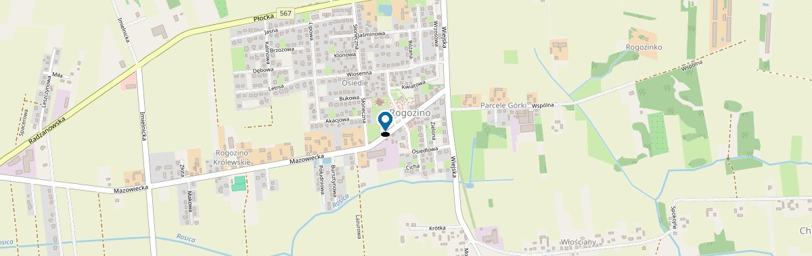

Solidny dach,
który chroni Twój dom na lata
Budowa, wymiana i remont dachów w Płocku i okolicy. Pokrycia skośne i płaskie, ocieplenia, obróbki blacharskie, więźba i rynny - fachowo, terminowo i z uczciwym doradztwem.
Budowa, sprzedaż i remont dachów - Rogozino, powiat płocki i Płock
KMK Dachy to dekarze z Rogozina pod Płockiem. Kompleksowo zajmujemy się dachami: od budowy nowego pokrycia na stanie surowym, przez wymianę zużytego dachu, po naprawy, remonty i obróbki blacharskie. Działamy w Płocku i całym powiecie płockim, a także w Płońsku, Gostyninie i Sierpcu.
Dach to element domu, na którym najbardziej widać różnicę między solidną robotą a pośpiechem. Źle ułożona membrana, nieszczelna obróbka komina czy zła wentylacja połaci potrafią latami niszczyć więźbę i strop, zanim właściciel w ogóle zauważy problem. Dlatego u nas każdy dach traktujemy indywidualnie - dobieramy pokrycie i konstrukcję do bryły budynku, spadku połaci i budżetu, a nie odwrotnie.
Nasi klienci najczęściej podkreślają dwie rzeczy: uczciwe doradztwo i terminowość. Zanim zaczniemy, mówimy wprost, co ma sens, a na czym naprawdę szkoda pieniędzy - bo dobry dekarz powinien czasem odradzić, a nie tylko sprzedać. Pracujemy na materiałach sprawdzonych producentów, dbamy o detale (kalenica, kosz, obróbki komina, pas nadrynnowy) i po zakończonej pracy zostawiamy plac budowy uprzątnięty.
Jeśli zastanawiasz się nad nowym dachem, wymianą starego pokrycia albo tylko naprawą przecieku - zadzwoń lub napisz. Przyjedziemy, obejrzymy dach na miejscu i podamy jasną, bezpłatną wycenę bez zobowiązań.

Dach robimy tak, jakby miał chronić nasz własny dom
Jesteśmy dekarzami z okolic Płocka, dla których dach znaczy więcej niż samo pokrycie - to ochrona całego domu na dekady. Pracujemy solidnie, na sprawdzonych materiałach i z dbałością o każdy detal, który decyduje o szczelności: kalenicę, kosz, obróbkę komina i pas nadrynnowy.
- Indywidualne podejście do każdego dachu
- Uczciwe doradztwo - powiemy, co ma sens, a na czym szkoda pieniędzy
- Materiały sprawdzonych producentów
- Jasna wycena i termin ustalony na start
- Po pracy zostawiamy porządek
U nas kupisz usługę z materiałem na VAT 8% - dla domów i mieszkań objętych społecznym programem mieszkaniowym (dom do 300 m²). Jedna faktura, niższy koszt, bez kombinowania.
Zapytaj o wycenęNasze usługi dekarskie
Każdy dach traktujemy indywidualnie - dobieramy pokrycie, konstrukcję i obróbki tak, by służył dziesięciolecia.
Pokrycia dachowe
Blachodachówka, dachówka ceramiczna i betonowa, blacha na rąbek - dobrane do bryły Twojego dachu.
WięcejDachy płaskie - papa i membrana
Pokrycia papowe i membrany na dachy płaskie, tarasy i garaże. Szczelnie, warstwa po warstwie, na lata.
WięcejOcieplenia dachu i stropu
Docieplenie połaci i stropodachu - cieplejszy dom zimą, chłodniejszy latem i niższe rachunki.
WięcejObróbki blacharskie
Obróbki komina, kalenicy, kosza i pasów nadrynnowych - to one decydują o szczelności całego dachu.
WięcejRynny i systemy rynnowe
Montaż i wymiana rynien oraz rur spustowych - woda odprowadzona tam, gdzie trzeba, bez zacieków na elewacji.
WięcejWięźba dachowa i ciesielstwo
Konstrukcje dachowe od podstaw - solidna ciesielka pod każdy kształt i spadek dachu.
WięcejRemonty i naprawy dachów
Wymiana pokrycia, naprawa przecieków, usuwanie usterek - przywracamy dach do pełnej sprawności.
WięcejOkna dachowe i podbitki
Montaż okien dachowych, podbitki i wykończenia, które domykają dach estetycznie i szczelnie.
WięcejNie widzisz swojego tematu na liście? Zadzwoń - doradzimy i wycenimy za darmo.
Dach to nie miejsce na oszczędności i półśrodki
Zły dach potrafi latami niszczyć dom niezauważony. Dlatego u nas liczy się fachowe wykonanie i uczciwe podejście - a nie najniższa cena za wszelką cenę. Doradzimy pokrycie dopasowane do bryły domu i budżetu, podamy jasną wycenę i dotrzymamy ustalonego terminu.
Fachowość
Robimy zgodnie ze sztuką dekarską i technologią producenta materiałów.
Uczciwe doradztwo
Powiemy wprost, co ma sens, a na czym szkoda Twoich pieniędzy.
Solidne materiały
Pracujemy na materiałach sprawdzonych marek, nie na przypadkowych zamiennikach.
Terminowość i porządek
Trzymamy się ustalonego terminu, a po pracy zostawiamy plac czysty.
Pracujemy na materiałach sprawdzonych producentów
Dobór konkretnej marki blachy, dachówki, okien dachowych czy systemu rynnowego ustalamy przy wycenie - pod Twój dach, budżet i oczekiwaną trwałość. Zawsze stawiamy na materiały renomowanych producentów i akcesoria systemowe, bo to one decydują o szczelności i żywotności dachu.
Dachy, które kryliśmy
Od blachodachówki i dachówki ceramicznej, przez blachę na rąbek, po dachy płaskie, ocieplenia i obróbki blacharskie.


{kind=link}
{kind=link}
{kind=link}
To przykładowa galeria demonstracyjna. Na docelowej stronie umieścimy zdjęcia realnych realizacji KMK Dachy.
Co mówią klienci
Solidna robota, moim zdaniem znają się na swoim fachu. Plus też za to, że doradzili kilka rozwiązań, ale też potrafili wytłumaczyć, dlaczego niektóre rzeczy nie mają sensu i szkoda na nie moich pieniędzy. Polecam.
Bardzo solidne wykonanie ocieplenia stropu i dachu, obróbki blacharskie również super. Panowie zawsze służą profesjonalną poradą. Polecam bardzo KMK Dachy - solidna i uczciwa firma.
Super fachowiec! Rzetelny, terminowy, kontaktowy. Bardzo polecam i chętnie skorzystam z usług ponownie.
Dekarz na Twoją okolicę
Mamy siedzibę w Rogozinie pod Płockiem i pracujemy na dachach w całym regionie. Zobacz stronę dla swojego miasta.
Dekarz Płock
Budowa, wymiana i remont dachów w Płocku i najbliższych okolicach.
Dekarz Płońsk
Pokrycia dachowe, wymiana dachu i naprawy w Płońsku i gminie.
Dekarz Rogozino i Radzanowo
Nasza baza - dachy w Rogozinie, Radzanowie i sąsiednich miejscowościach.
Działamy też w: Gostyninie, Sierpcu i okolicach. Zobacz pełny obszar działania.
Dach bez tajemnic
Krótkie, konkretne odpowiedzi na pytania, które najczęściej słyszymy. Pełną listę znajdziesz w dziale FAQ.
Ile kosztuje nowy dach?
Orientacyjnie dach domu jednorodzinnego „na gotowo" (materiał, robocizna, membrana, obróbki i rynny) to najczęściej 150-350 zł za m², czyli zwykle od kilkunastu do kilkudziesięciu tysięcy złotych za cały dach. Ostateczna cena zależy od powierzchni i kształtu dachu, rodzaju pokrycia oraz stanu więźby. Najpewniej podamy ją po bezpłatnych oględzinach. Zobacz szczegóły w FAQ.
Ile trwa wymiana dachu?
Wymiana dachu domu jednorodzinnego trwa zazwyczaj od 4 do 10 dni. Czas zależy od powierzchni dachu, pogody oraz rodzaju pokrycia. Mniejsze, proste dachy schodzą szybciej, a te wielospadowe, z lukarnami i oknami dachowymi - dłużej.
Czy wykonujecie naprawy dachów?
Tak. Zajmujemy się nie tylko budową i wymianą, ale też naprawami: usuwaniem przecieków, wymianą uszkodzonych dachówek, poprawą obróbek blacharskich i uszczelnianiem komina. Jeśli dach nadaje się do naprawy, odradzimy niepotrzebną wymianę.
Dachówka czy blacha - co wybrać?
W skrócie: dachówka ceramiczna to inwestycja na pokolenia (trwałość ponad 100 lat, prestiż, cichy dach), ale jest droższa i wymaga mocnej więźby. Blachodachówka jest tańsza, bardzo lekka i szybka w montażu - dobra na starszą więźbę i pod fotowoltaikę. Doradzimy pod Twój dach i budżet. Więcej na blogu.
Masz pytania? Potrzebujesz wyceny?
Zadzwoń lub napisz - przyjedziemy, obejrzymy dach i podamy jasną cenę. Bez zobowiązań.
